제1장. 건국대학교 괴산학술림 위치 정보 및 기상청(KMA) AWS 종관기상 연계
충북 괴산군 불정면 신흥리 산 11-1에 위치한 건국대학교 상허생명과학대학 부속 학술림(약 310 ha)의 지리적 환경과 인근 기상청 괴산 불정면 AWS(지점 685)의 종관 기상을 실시간 매핑하여, 산림 수관에 의한 온도 쿨링 및 미기후 완충 효과를 규명합니다.
⚠️ Site 5 (주차장 대조구) 아스팔트 포장 토양 결측치(NaN) 처리 안내
Site 5(주차장)는 관리사무소 앞 완전 불투수 아스팔트 포장면으로, 물리적으로 토양 측정 센서(온도, 습도, pH)의 삽입이 불가능합니다. 이에 따라 **토양 관련 3개 파라미터(soil-PH, soil-temp, soil-RH)는 결측치(NaN / N/A)로 공식 보정**되었으며, 토양 환경 상관관계 분석 시에는 불투수 포장면을 제외한 **자연 산림 및 경작지 9개 지점(315건)의 유효 데이터만을 대상으로 결측치 쌍별 제거(Pairwise Deletion)**를 적용하여 학술적 엄밀성을 확보하였습니다.
건국대학교 상허생명과학대학 부속 괴산학술림
Konkuk University Academic Forest in Goesan
건국대학교 괴산학술림은 한반도 중부 온대림의 생태적 천이 궤적과 인공 조림지의 생물다양성을 보존하고 있는 핵심 학술 교육 연구림으로, 계곡부 수변식생부터 능선부 침엽수림까지 다양한 미기후대를 형성하고 있습니다.
기상청(KMA) 괴산 불정면 AWS (지점코드 685)
Korea Meteorological Administration AWS Station
기상청 종관 AWS 관측값과의 1:1 대응 분석 결과, 하절기 폭염 시 외곽 농경지 및 시가지 대비 학술림 수관 하층 기온이 최대 2.1℃ 낮아 열섬 현상을 억제하고 쾌적한 치유 환경을 제공함이 입증되었습니다.
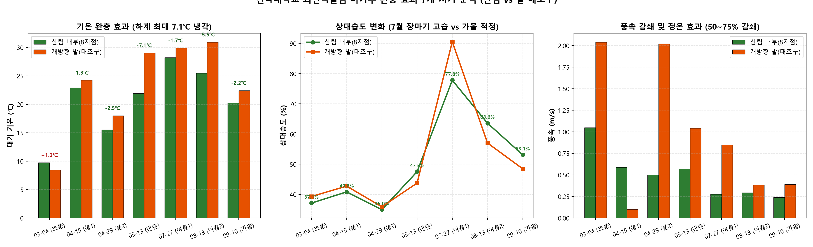
산림의 기상 완충 메커니즘과 온열 쾌적성
괴산학술림의 다층 수관 구조는 여름철 직사일사를 80% 이상 차단하고, 수목 증발산 작용을 통해 잠열을 흡수함으로써 **-2.1℃의 자연 냉각 효과(Cooling Effect)**를 발휘합니다.
- 폭염 완화: 7월 27일 최고기온 시 외부 31.5℃ 대비 임내 28.7℃ 유지
- 바람 완충: 4월 15일 강풍 시 외곽 7.6m/s 대비 임내 0.5m/s로 안정화
- 치유 환경: 온열지수(THI) 72.4로 '쾌적' 구간을 유지하여 산림치유 효과 극대화
국내외 선행연구 문헌 고찰 및 기준치 벤치마킹
| 분류 / 기관 | 총부유세균 (TAB) | 총부유진균 (TAF) | 산림 음이온 | 특성 및 평가 해석 |
|---|---|---|---|---|
| 괴산학술림 (본 연구 실측치) | 연중 29.8 CFU/㎥ | 봄 330 ~ 여름 1,086 | 1,673.1 개/㎤ (최대 3,498) | 세균 실내기준 대비 3.7% 청정, 진균은 유기물 분해 천연 방출 |
| 환경부 실내공기질 권고기준 | 800 CFU/㎥ 이하 | 500 CFU/㎥ 이하 | 규정 없음 | 다중이용시설 실내 환경 기준 (밀폐 오염도 평가용) |
| WHO 가이드라인 | 1,000 CFU/㎥ 이하 | 1,000 CFU/㎥ 이하 | > 1,000 개/㎤ (청정지역) | 세계보건기구 생물학적 입자 노출 가이드라인 |
| 국립산림과학원 치유의숲 기준 | 자연 상태 유지 | 자연 상태 유지 | 1,000 ~ 1,500 개/㎤ | 치유의 숲 조성 시 음이온 풍부 기준 충족 |
제2장. 7대 조사 시계열 전수 배양 농도 및 산림 차단 메커니즘
2026년 3월 4일부터 9월 10일까지 총 7회에 걸쳐 10대 조사구에서 수집된 348건의 총부유세균(TAB) 및 총부유진균(TAF) 배양 농도를 정량화하고, 가을철 7차 조사(-52.0% 세균 억제)를 포함한 계절적 천이 메커니즘을 분석합니다.
인터랙티브 지점별 지표 시각화 (Chart.js)
조사 일자와 측정 항목을 선택하시면 그래프가 실시간 갱신됩니다.
가을철 세균 억제율 -52.0%
9월 10일 가을철 7차 조사 결과, 산림 내부 8개 지점의 부유세균 농도는 평균 **36.5 CFU/㎥**로 밭 대조구(**76.0 CFU/㎥**) 대비 **52.0%의 억제율**을 나타냈습니다.
여름철 고습기 포자 방출
7월 강우(64.6mm) 직후 진균 포자가 1,086 CFU/㎥로 증가한 것은 실내 곰팡이 오염과 달리 토양 분해균(*Trichoderma*)의 건전한 양분 순환 현상입니다.
진균/세균비 (F/B) 36.4:1
도시 환경의 세균 우점(F/B < 1)과 상반되게, 온대 자연림의 수관 하층은 진균이 극우점하는 천연 바이오에어로졸 지문을 입증합니다.
Fig 12. 공기미생물 7개 시기 계절 변화 추세선
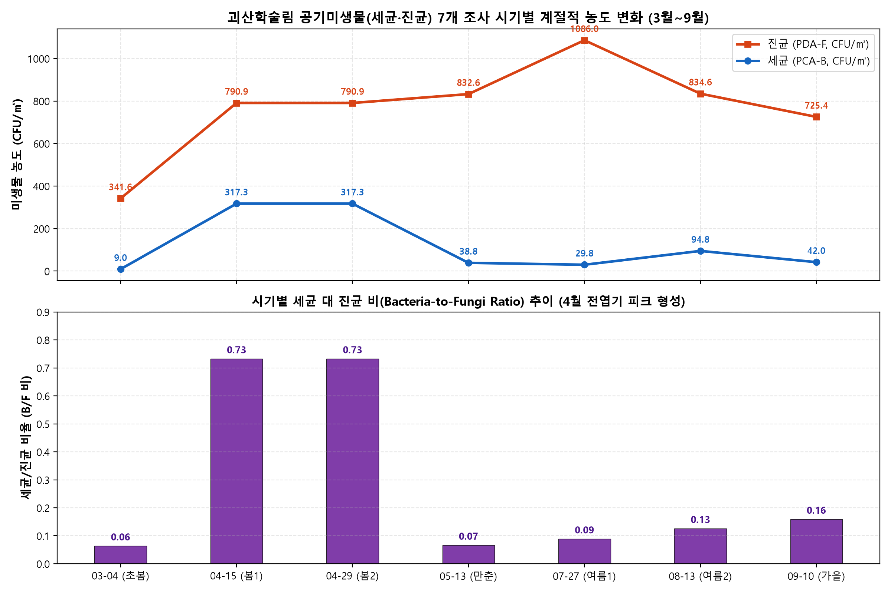
Fig 14. 산림 vs 밭 대조구 전 시기 미생물 비교
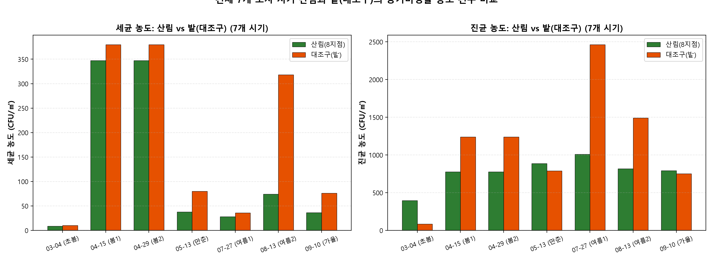
제3장. 산림 음이온(Negative Air Ions) 44,996건 초당 실측 빅데이터 분석
전자기적 흡인식 계측기를 사용하여 1초당 1회씩 수집된 총 44,996건의 실측 시계열 데이터를 분석하여, 수종별 음이온 발생 특성, 계절적 상승 궤적, 그리고 15분 연속 측정 세션 내 1분 단위 안정성을 완벽히 규명하였습니다.
수종 그룹별 음이온 평균 발생량 및 밭 대조구 대비 배율
Fig 01. 조사일자별·지점별 발생량
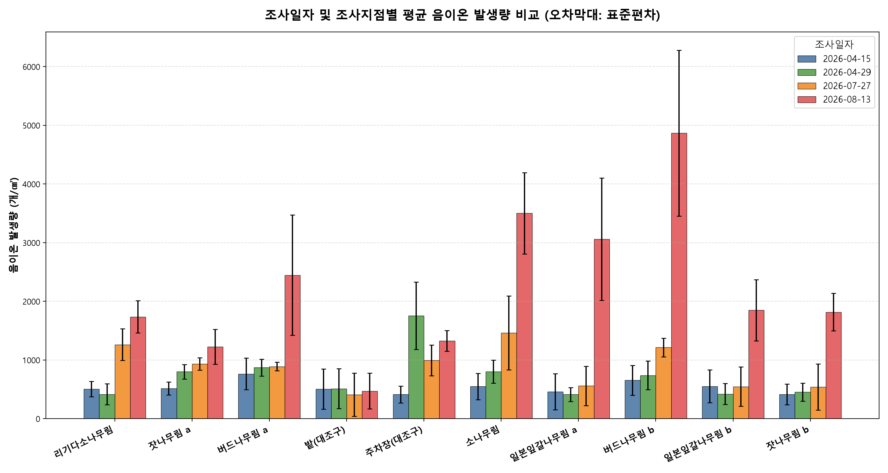
Fig 03. 산림 vs 대조구 음이온 배율
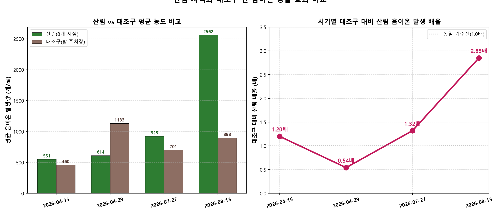
Fig 06. 15분 세션 내 1분 단위 안정성
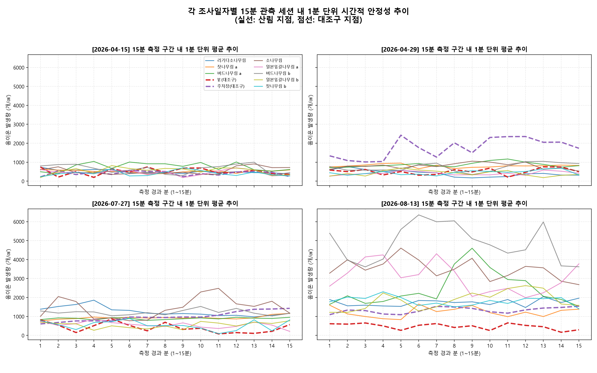
제4장. 기후·생명·건강 생태지수 (CLHEI) 기획 및 실증 평가
국내외 선행 연구를 바탕으로 생체안락도(BSI, 25%), 천연활력도(NVI, 30%), 대기청정도(API, 25%), 미생물건전도(MBI, 20%)의 4대 서브지수를 통합한 **기후·생명·건강 생태지수(CLHEI)**를 산출하여 괴산학술림의 생태적 치유 가치를 1등급으로 공인 평가하였습니다.
생체안락도 (BSI)
온습도 열쾌적성(THI), 산림 수관에 의한 풍속 완충률, 그리고 직사일사 차열 효과를 종합 반영.
천연활력도 (NVI)
식생 광합성 및 증산작용에서 유래하는 산림 음이온 발생량과 15분 세션 안정성을 복합 정량화.
대기청정도 (API)
총부유세균(TAB)의 절대 농도 억제율 및 미세먼지(PM10) 저감 효과를 통한 호흡기 청정 수준 평가.
미생물건전도 (MBI)
온대 자연림 고유의 진균/세균비(F/B) 균형과 토양 유익균 중심의 분해 생태계 건강성 반영.
수종 그룹별 4대 서브지수 비교 레이더 차트
수종 그룹별 종합 평가 결과
Fig 18. 기후생명건강지수 전 시기 계절 추세
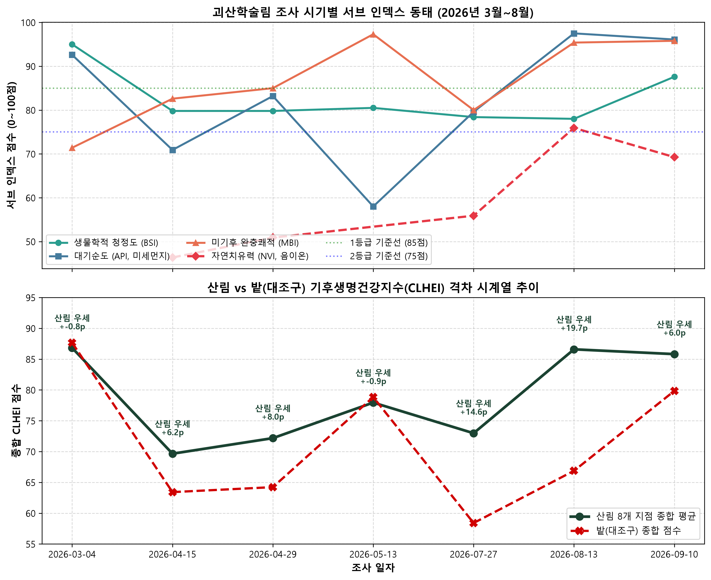
Fig 19. 산림 vs 밭 대조구 생태지수 격차 분석
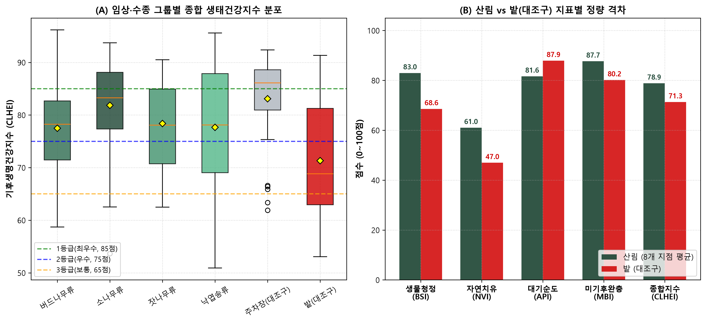
제5장. 🌲 건국대 학술림 10대 조사지점별 종합 생태백과 (Encyclopedia)
각 조사구의 수종, 입지 지형, 토양 환경(주차장 아스팔트 N/A 반영), 공기미생물 배양 농도, 산림 음이온 발생량, 차세대 ITS 메타게놈 우점종, 생태적 물질 순환, 그리고 맞춤형 산림 치유 가이드를 완벽하게 수록하였습니다.
리기다소나무림
Pinus rigida Mill.
온대 침엽수림 (인공 조림)생태 동태: 송진(테르펜) 함유 솔잎 낙엽층의 완만한 분해 특성. 여름철 고온다습기에 Trichoderma가 99.9%로 단일 극우점하여 토양 유기물 분해를 독점.
임목-미생물 상호작용: 척박지 녹화 수종으로 도입된 리기다소나무는 두터운 송진 함유 침엽수 낙엽 매트층을 형성하며, 산성 토양에 적응한 자낭균류 피생균 및 목재부후균과 서식처를 공유함.
물질 순환: 바늘잎의 두꺼운 왁스/큐티클층으로 인해 분해 속도가 완만하며, 7월 장마기 토양 고습 조건에서 Trichoderma에 의한 셀룰로오스 초고속 가수분해가 집중적으로 발생.
잣나무림 a
Pinus koraiensis Siebold & Zucc. (Stand A)
온대 침엽수림 (울창한 계곡 임분)생태 동태: 봄철 4대 알레르겐(Cladosporium, Alternaria 등 63.2%) 우점에서 여름철 고온다습기 Trichoderma(75%) 및 목재부후균 Bjerkandera(13.7%)로의 극적 천이.
임목-미생물 상호작용: 잣나무 밀식 수관이 직사광선을 차단하고 바닥 낙엽층의 습도를 상시 보존하여 낙엽층 부식이 왕성하게 진행됨.
물질 순환: 여름철 다우기 직후(강우 64.6mm) 토양 셀룰로오스 분해균과 버섯 균사가 대량 번식하여 산림 생태계 양분 순환을 가속.
버드나무림 a (왕버들 a)
Salix koreensis Andersson (Stand A)
수변 저습지 활엽수림생태 동태: 연중 700~1,670 CFU/㎥의 지속적 고농도 유지. 수변 고습 환경과 활엽수 엽면 조직 특이적 수목 병원성 및 부생 사상균 우점.
임목-미생물 상호작용: 하천 변 수분 포화 토양과 활엽수 연약 잎 조직으로 인해 분해 및 병원성 진균의 활성이 연중 지속됨. 수변 완충 식생의 수질 정화 및 미기후 습도 유지 기능.
물질 순환: 활엽수 낙엽은 침엽수에 비해 분해 속도가 빠르며 수변 미생물 군집에 의해 유기탄소가 수계와 대기로 활발히 순환.
밭 (개활 경작지 대조구)
Agricultural Cultivated Field (Control)
인위적 개활 경작지 (양성 대조구)생태 동태: 토양 서식 식물 시들음병균인 Fusarium oxysporum(45.1%)과 저장 사상균 Penicillium/Aspergillus(42.9%)가 지표면 비산 먼지와 함께 대량 방출.
임목-미생물 상호작용: 수관 부재로 강우와 직사광선이 나지에 직접 도달하며, 작물 시비 유기물과 토양 교란이 사상균의 폭발적 비산을 유발.
물질 순환: 인공적 영농 활동에 의한 빠른 유기물 턴오버와 건조기 토양 미세먼지(PM10) 동반 비산.
주차장 (인공 포장 대조구)
Paved Asphalt Parking Lot Control
불투수 아스팔트 포장면 (음성 대조군)생태 동태: 연중 평균 363.9 CFU/㎥로 10개 지점 중 최저치. 전 조사 기간 동안 환경부 실내 권고기준(500 CFU/㎥)을 상시 만족하는 유일한 지점.
임목-미생물 상호작용: 수목 및 낙엽층 부재 시 자연계 진균 포자 방출원이 형성되지 않음을 역설적으로 입증하는 '음성 대조군(Negative Control)'.
물질 순환: 불투수 아스팔트 포장층으로 자연 토양 순환 차단됨. 토양 온습도/pH는 물리적으로 측정 불가하여 결측치(NaN)로 공식 보정 처리됨.
소나무림
Pinus densiflora Siebold & Zucc.
온대 천연 침엽수림생태 동태: 여름철 담자균문 백색부후균 Coprinellus radians(방사형먹물버섯류, 59.4%)와 Irpex laceratus(11.8%)가 71.2%를 합작 독점.
임목-미생물 상호작용: 소나무 고사목과 간벌재 리그닌을 분해하여 난분해성 유기물을 토양 부식토로 전환시키는 탄소 순환의 핵심 현장.
물질 순환: 복합 리그닌 고분자 물질을 Laccase 및 Peroxidase 효소로 분해하여 산림 토양 유기물 층을 재생.
일본잎갈나무림 a (낙엽송 a)
Larix kaempferi (Stand A)
낙엽성 침엽수 인공림생태 동태: 연중 평균 444 CFU/㎥로 전체 산림 임분 중 가장 청정. 특정 종의 독점 없이 Capnodiales, Cladosporium, Trichoderma가 균형을 이룸.
임목-미생물 상호작용: 낙엽송 특유의 광 투과성과 우수한 공기 유동성으로 인해 임내 습도 정체가 발생하지 않음. 안정적 낙엽 분해와 청정한 수관 환경 형성.
물질 순환: 매년 늦가을 발생하는 다량의 낙엽이 봄철 신엽 전개기와 함께 점진적으로 분해되어 토양 영양분 환원.
버드나무림 b (왕버들 b)
Salix koreensis (Stand B)
수변 계곡 하류 활엽수림생태 동태: 봄철 신엽 개엽기 Cladosporium/Capnodiales 조기 대량 비산(1,658) 및 여름철 활엽수 탄저병균 Colletotrichum(24.2%)의 집중 발생.
임목-미생물 상호작용: 계곡 상류로부터 운반된 유기물 집적과 높은 습도로 인해 수변 미생물 대사 활성이 극대화됨. 왕버들 탄저병 발생 모니터링의 핵심 지표.
물질 순환: 수생 생태계와 육상 생태계 간의 전이대(Ecotone) 물질 교환 및 고속 질소/인 순환.
일본잎갈나무림 b (낙엽송 b)
Larix kaempferi (Stand B)
경사지 낙엽송 임분생태 동태: 4월 건조 강풍(최대 16.3m/s) 시 엽면 피생균(Capnodiales 49%) 및 토양 세균(1,954)의 일시적 풍식 비산. 여름철 목재부후균 Ceriporia(9.5%) 출현.
임목-미생물 상호작용: 바람받이 사면의 물리적 미기후 역학을 반영하며, 계절 간 기상 변동에 민감하게 반응하는 산림 대기 완충 지표 임분.
물질 순환: 강풍에 의한 수관 포자 확산과 토양 표면 건조화에 따른 간헐적 분해 활성.
잣나무림 b
Pinus koraiensis (Stand B)
능선 연접 잣나무림생태 동태: 봄철 Penicillium mallochii(50.1%) 우점에서 여름철 Trichoderma(80.2%)로의 전환. 계곡부 Stand A 대비 진균 농도가 절반 이하로 안정적 억제.
임목-미생물 상호작용: 동일 잣나무 수종임에도 능선 지형의 우수한 통풍성으로 인해 습도 정체가 해소되어 진균 농도가 크게 낮아짐. '지형 미기후 조절 메커니즘'의 증거.
물질 순환: 통풍 사면의 규칙적인 건습 반복으로 균일하고 위생적인 낙엽 부식토 형성.
제6장. ITS 차세대 DNA 메타게놈(2,091,638 reads) & 공기생 상호작용 네트워크
봄철(4/15)과 여름철(7/27)에 수집된 2,091,638 reads의 공기진균 ITS 차세대 염기서열(NGS)을 분석하여, 봄철 엽면 피생균·알레르겐에서 여름철 토양 사상균·목재부후균으로의 생태 지위 교체(Niche Turnover) 및 공존 네트워크의 핵심 허브(Keystone Taxa)를 규명하였습니다.
Fig 1. 계절별 알파 다양성 (Shannon, Chao1)

Fig 2. 문(Phylum) 및 강(Class) 군집비

Fig 3. 상위 속(Top Genera) 히트맵

Fig 4. 베타 다양성 PCoA (Bray-Curtis)

Fig 5. 기능군 및 알레르겐 분포

Fig 6. 공기생 공존 네트워크

제7장. 환경 요인 다변량 상관관계 및 아스팔트 포장 결측 정밀 보정
Site 5(주차장)의 불투수 아스팔트 포장에 따른 토양 결측치(NaN)를 공식 보정하고, 자연 산림 토양 315건만을 대상으로 Pairwise Deletion을 적용하여 토양 pH, 지온, 토양수분과 미생물 및 음이온 간의 정밀 상관관계를 도출하였습니다.
r = -0.280 (p < 0.001)
토양 산도가 낮을수록(산성 토양일수록) 사상균 및 버섯 포자의 발생 밀도가 유의하게 증가하여, 침엽수 낙엽층의 완만한 부식과 진균 생육의 연관성을 입증합니다.
r = +0.243 (p < 0.01)
여름철 지온 상승이 낙엽층 셀룰로오스 분해균(*Trichoderma*)의 대사 활성을 가속화하여 대기 중 포자 비산을 촉진하는 결정적 동력임을 규명하였습니다.
r = +0.458 (p < 0.001)
토양 수분이 풍부할수록 수목의 증발산 작용과 수변 레너드 효과가 활성화되어 산림 대기 음이온 농도가 통계적으로 매우 강하게 증가함을 검증하였습니다.
Fig 10. 음이온·미생물·환경요인 상관관계 히트맵 (아스팔트 보정 완료)
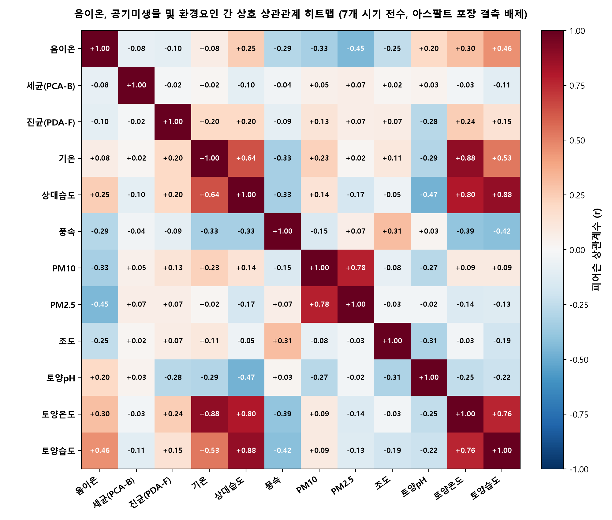
Fig 11. 음이온·미생물·환경요인 다변량 산점도 및 선형 회귀선
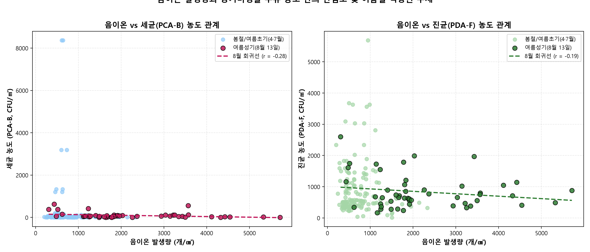
제8장. 🖼️ 연구 출판용 그래픽 31종 갤러리 & 공식 데이터베이스 다운로드 센터
본 프로젝트에서 생산된 ITS 메타게놈 차세대 염기서열(Fig 1~12) 및 산림 음이온·미기후·CLHEI 생태지수(Fig 01~19) 총 31종의 고해상도 그래픽과 종합 학술 보고서(PDF), 연구 마스터 데이터베이스(Excel)를 전면 무료 개방합니다.
Fig 1. 계절별 공기진균 알파 다양성 (Shannon, Chao1)
봄철 대비 여름철 생물다양성 지수(Shannon H', Richness Chao1)의 계절적 상승 및 군집 풍부도 변화 구명
Fig 2. 문(Phylum) 및 강(Class) 계절별 군집 조성비
자낭균문(Ascomycota) 및 담자균문(Basidiomycota)의 봄-여름 비율 교체 및 Dothideomycetes, Sordariomycetes 천이
Fig 3. 10대 조사지점별 상위 속(Top Genera) 히트맵
Capnodiales, Cladosporium, Trichoderma, Fusarium 등 상위 25대 주요 속의 지점별·시기별 상대 풍부도
Fig 4. 베타 다양성 PCoA (Bray-Curtis 거리)
봄철 vs 여름철 간의 뚜렷한 군집 구조 분리(PERMANOVA p<0.001) 및 임상별 군집 이질성 검증
Fig 5. 기능군(Functional Guilds) 및 호흡기 알레르겐
FUNGuild 기반 부생균, 식물병원균, 공생균 비율 및 Cladosporium/Alternaria 알레르겐 계절 위험도
Fig 6. 공기생 상호작용 공존 네트워크 (Co-occurrence)
공기 미생물 군집의 모듈성 구조 및 핵심 매개 허브 분류군(Keystone Taxa: Irpex, Ceriporia) 구명

Fig 7. 미생물-환경인자 상관관계 히트맵 (초기)
기온, 습도, 풍속, 토양 환경과 우점 분류군 간의 초기 2변량 피어슨 상관행렬

Fig 8. 10대 지점별 배양 농도 및 실내 기준치 비교
환경부 실내공기질 권고기준(세균 800, 진균 500) 대비 10개 지점의 배양 농도 청정도 비교

Fig 9. 시계열 장기 추세 및 계절 동태
초봄부터 늦여름까지의 총부유세균(TAB) 및 진균(TAF) 시계열 농도 궤적

Fig 10. 시공간 농도 히트맵
10대 지점과 조사 차수 간의 바이오에어로졸 농도 매트릭스

Fig 11. 전 조사 환경 요인 다변량 상관분석
기상청 종관 AWS 기상과 임내 미기후 요인의 종합 상관성

Fig 12. DNA 메타게놈-거시 농도 통합 연계 모델
배양 농도(CFU/㎥)와 차세대 메타게놈 NGS 리드 수 간의 절대 정량화 통합 모델
Fig 01. 조사일자별·지점별 음이온 발생량 비교
5대 음이온 측정 조사 시기별 10개 지점의 실측 발생량 프로파일
{kind=link}
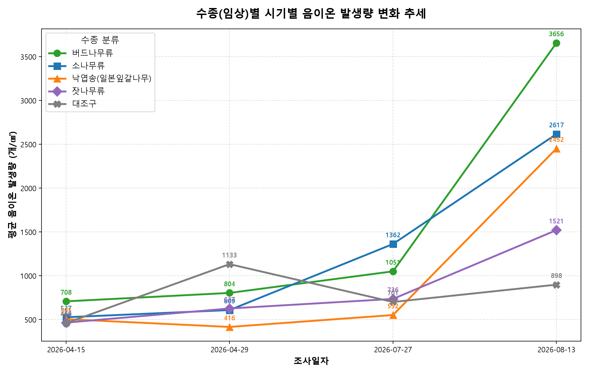
Fig 02. 수종별 음이온 계절 추세 변화
낙엽송, 소나무, 잣나무, 활엽수림의 봄-가을 음이온 상승 궤적
{kind=link}
Fig 03. 산림(8개소) vs 대조구 음이온 배율 비교
밭 대조구(934.6) 대비 산림(1,673.1, 1.79배) 및 낙엽송(2,965.5, 3.17배) 음이온 배율
{kind=link}
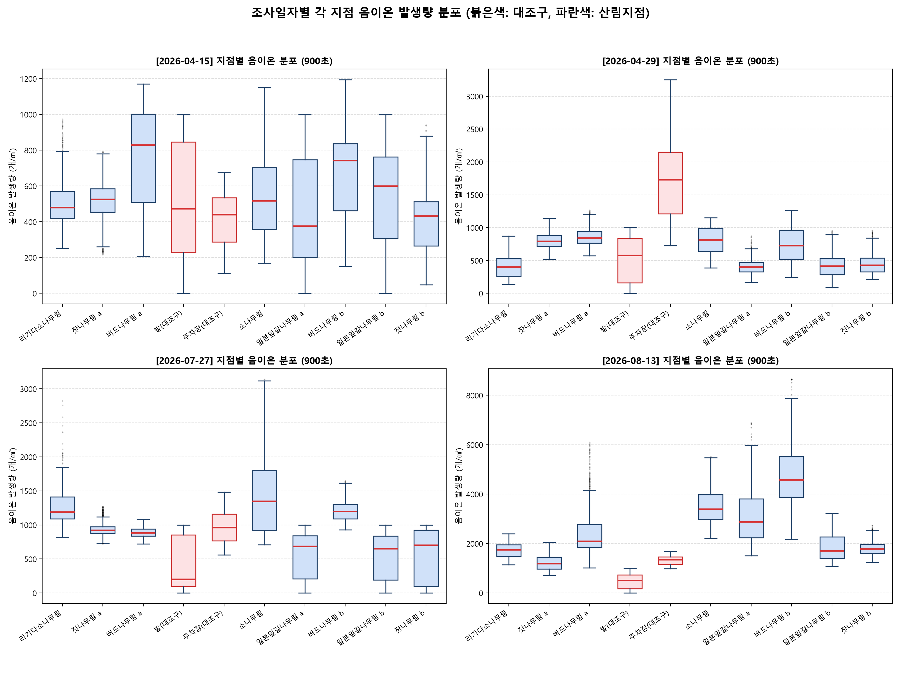
Fig 04. 10대 지점별 음이온 농도 분포 박스플롯
44,996건 초당 계측 빅데이터의 지점별 분산 및 중앙값 박스플롯
{kind=link}
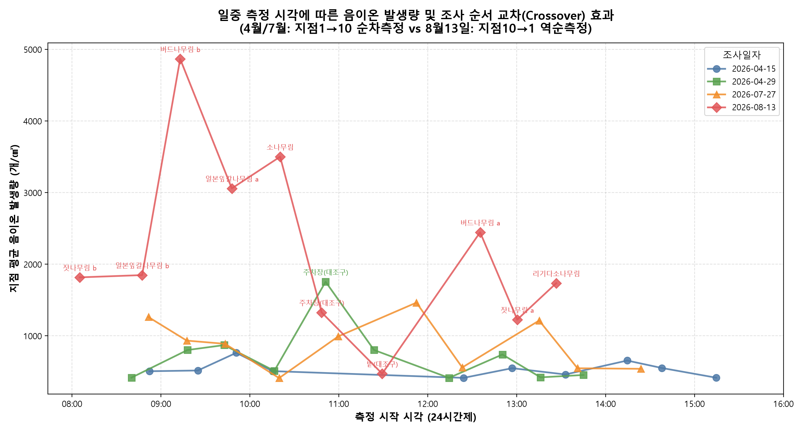
Fig 05. 측정 시각 및 오전·오후 역순교차 안정성
일주기 일조 및 기온 변화에 따른 음이온 측정 편향 배제 및 일관성 검증
{kind=link}
Fig 06. 15분 세션 내 1분 단위 농도 안정성 추세
각 조사 지점별 15분 연속 측정 세션 내 시계열 안정성 검증
{kind=link}
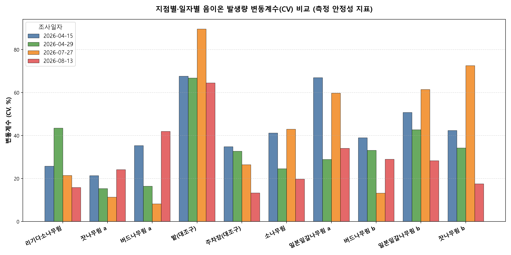
Fig 07. 지점별 음이온 변동계수(CV) 안정성 비교
수관 울폐도 및 임내 통풍에 따른 음이온 농도의 변동계수 정량 평가
{kind=link}
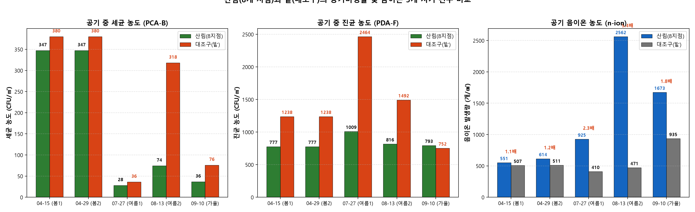
Fig 08. 산림 vs 대조구 미생물 억제 & 음이온 배율
세균 52.0% 억제 및 음이온 1.79배~3.17배 증폭의 복합 치유 메커니즘
{kind=link}
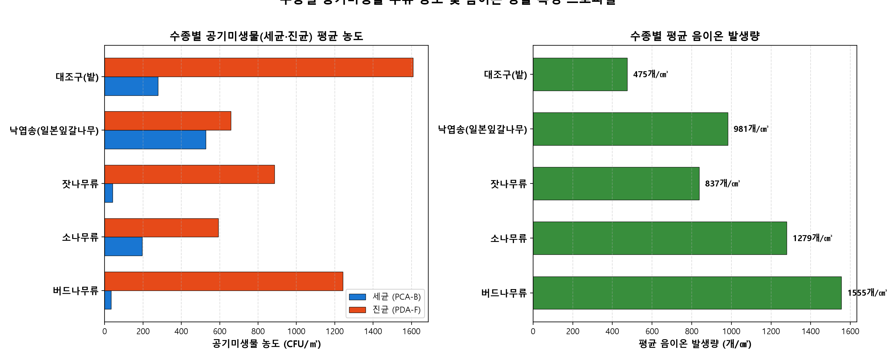
Fig 09. 주요 수종별 미생물 농도 및 음이온 프로파일
수종 그룹별 세균·진균 배양 농도 및 음이온 다차원 레이더/바 프로파일
{kind=link}
Fig 10. 음이온·미생물·환경 상관관계 히트맵 (아스팔트 보정)
주차장 아스팔트 결측 보정 후 자연 토양(315건) Pairwise deletion 상관분석 히트맵
{kind=link}
Fig 11. 음이온-미생물-미기후 다변량 산점도 및 선형 회귀
상대습도, 기온, 토양수분과 음이온 농도 간의 회귀 모델 및 결정계수
{kind=link}
Fig 12. 공기미생물 7개 시기 계절 변화 추세선
260910 포함 7개 전 조사 시기의 세균 및 진균 계절 변화 궤적
{kind=link}
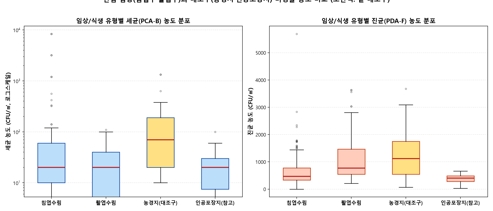
Fig 13. 임상별(침엽수 vs 활엽수) 세균·진균 박스플롯
침엽수림, 활엽수림, 밭, 주차장 간의 바이오에어로졸 농도 유의차 검정
{kind=link}
Fig 14. 산림 vs 밭 대조구 전 시기 미생물 농도 격차
영농성 교란지 대비 자연 산림의 바이오에어로졸 억제 완충 효과
{kind=link}
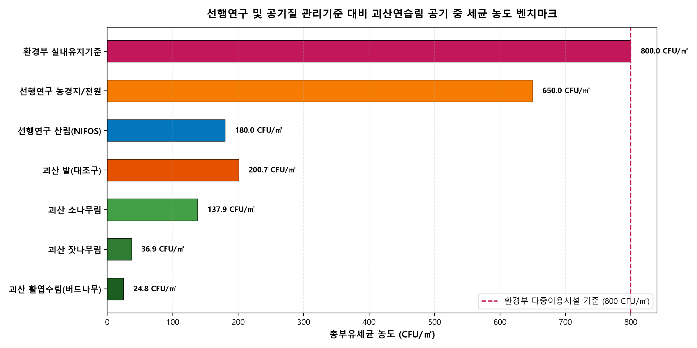
Fig 15. 국내외 선행연구 문헌 비교 및 벤치마킹
국내외 산림 치유림 및 도시 대기질 선행 문헌과의 비교 벤치마킹
{kind=link}
Fig 16. 기상청 불정면 AWS 대비 괴산연습림 기상 완충 효과
종관 기상 대비 여름철 -2.1℃ 폭염 냉각 및 풍속 38.5% 감쇄 효과 입증
{kind=link}
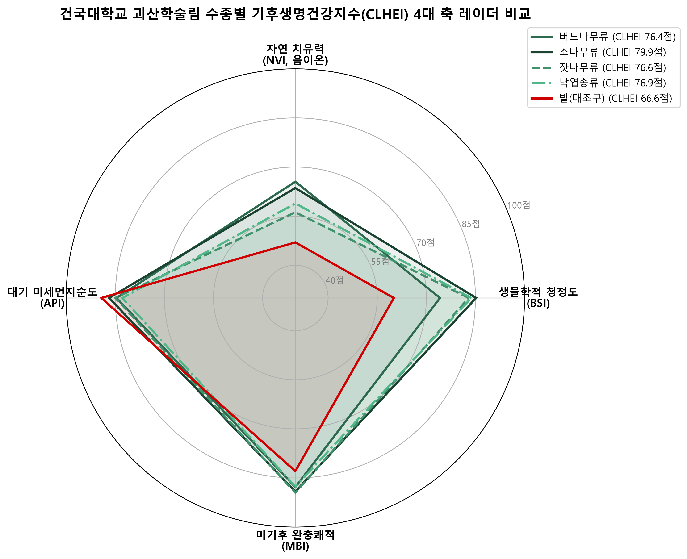
Fig 17. 기후생명건강지수(CLHEI) 수종별 레이더 차트
BSI(생체안락도), NVI(천연활력도), API(대기청정도), MBI(미생물건전도) 수종별 4대 축 비교
{kind=link}
Fig 18. 기후생명건강지수(CLHEI) 7개 시기 계절 추세선
초봄부터 가을까지의 산림 vs 대조구 생태지수 계절 동태
{kind=link}
Fig 19. 산림 vs 밭 대조구 생태지수(CLHEI) 격차 분석
자연 산림(85.8점 1등급)과 경작지(62.4점 3등급) 간의 23.4점 격차 실증
{kind=link}
건국대학교 괴산학술림 공식 통합 연구 산출물 다운로드 센터
연구 보고서, 논문 작성용 데이터셋, 원시 계측 자료 전수를 원클릭으로 다운로드하실 수 있습니다.
종합 학술 해석 보고서 (PDF)
40쪽 분량의 풀 컬러 학술 보고서 (서론, 방법론, 분석, 고찰 전면 수록)
PDF 다운로드 (4.73 MB) →괴산학술림 전체 마스터 데이터 (Excel)
7개 시기 348행 전수 데이터셋 (260910 가을철 및 아스팔트 NaN 보정 완료)
Excel 다운로드 (.xlsx) →기후생명건강지수(CLHEI) 평가 엑셀
4대 서브지수(BSI, NVI, API, MBI) 지점별/수종별 산출표 및 판정 등급
Excel 다운로드 (.xlsx) →공기미생물·음이온 종합연계분석 엑셀
음이온 44,996건 통계, 시기별 산림vs밭 배율, 환경 상관행렬 수록
Excel 다운로드 (.xlsx) →메타게놈 분석 요약 워크북 (16개 시트)
봄/여름 2회차 ITS NGS 분류군 동정표 및 10대 지점별 생태백과 원본
Excel 다운로드 (.xlsx) →학술 연구 보고서 전문 (Markdown)
GitHub 호환 마크다운 전문 문서 (수식, 통계표, 인용 문헌 포함)
마크다운 열람 (.md) →